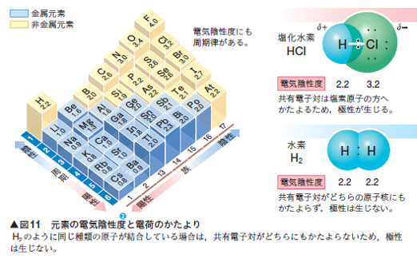

電気陰性度の定義
電気陰性度とは、化学結合において原子が共有電子対を引き寄せる能力を示す指標です。電気陰性度が高いほど、その原子は共有電子を強く引き寄せます。
電気陰性度の例
代表的な元素の電気陰性度を以下に示します：
- フッ素 (F): 4.0（最も高い電気陰性度）
- 酸素 (O): 3.5
- 窒素 (N): 3.0
- 塩素 (Cl): 3.0
- 炭素 (C): 2.5
- 水素 (H): 2.1
フッ素は、すべての元素の中で最も高い電気陰性度を持ちます。これに対して、アルカリ金属やアルカリ土類金属は電気陰性度が低く、共有電子を引き寄せる力が弱いです。
電気陰性度と化学結合
電気陰性度の違いは、分子内での結合の性質を大きく左右します。例えば、電気陰性度の差が大きい場合、イオン結合が形成されやすくなります。一方、電気陰性度の差が小さい場合、共有結合が形成されやすくなります。
電気陰性度の差が中程度の場合、極性共有結合が生じます。これは、結合の一方の原子が結合電子対をわずかに引き寄せ、分子が極性を帯びることを意味します。